Robocop
Robocop рус. Робот-полицейский, Робомент — винрарный фантастический боевик c лёгким налётом киберпанка, вышедший в 1987 году и захвативший умы тогдашней молодёжи. Автор первой части — бравый голландский грязный эстет Пол Верховен.
Сюжет
Корпорация OCP вознамерилась построить в славном городе Детройте Дельта-сити. Но ей мешает высокий уровень преступности, захлестнувший город. Поэтому компания выкупает у города полицию, а чтобы сэкономить на зарплатах копов (и получить откаты, куда без них), отдел безопасности OCP во главе с Диком Джонсом разрабатывает робота ED-209 для патрулирования улиц и поддержания правопорядка. Но на испытаниях неожиданно случается фейл (Цыпа убивает человека из совета директоров) и другой эффективный менеджер Боб Мортон предлагает свою модель робота полицейского с блэкджеком и шлюхами. В это же самое время Алекса Мерфи переводят в другой полицейский участок и они с напарницей Энн Льюис отправляются на дежурство. Внезапно им встречаются бандиты во главе со вторым главным злодеем Кларенсом Боддикером и в результате Алекса невозбранно выпиливают. Притом, выпиливают это ещё мягко сказано. Прежде чем кончить нашего добродетеля, его весьма так сытно и нещадно кормят свинцом из дробовика, превращая тело в ошмётки гуро, а чтобы получить еще больше лулзов, бронежилет не снимают. Остатки его тела (торс с несколькими метрами кишок, но без сердца и голову, но без руки, хотя ее могли спасти) используют для создания киборга. Память стирают (но, как обычно, не до конца) и записывают в мозг программу, подозрительно похожую на DOS. После этого Робокопа отправляют для испытаний в полицейский участок. Случайно им оказывается участок, где Мерфи служил, перед тем, как его убили.
Затем Мерфи Робокоп выходит на дежурство и начинает браво выпиливать хулиганов, бандитов и выдавать разные винрарные фразы. В то же время Боддикер по указанию Дика отправляет Мортона в Валгаллу (а нечего было старшим на больную мозоль наступать).
Постепенно к Робо возвращаются воспоминания о былом. И он понимает, что мир слишком тесен для него и Боддикера. В процессе ареста Боддикера, Робо выходит на Дика и пытается арестовать и его. Но тут его поджидает неудача. В его мозгу звучат разные голоса и запрещают ему трогать руководство OCP (директива 4 — при попытке ареста служащих ОСР отключается питание). Затем, стойко перенеся тяготы и лишения, Робо на пару с Льюис выпиливает банду отморозков, а затем единолично убивает Дика. Happy end.
Продолжение-раз
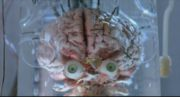
Кейн смотрит на тебя, как на говно.
Robocop-2 — хорош только Робокопом и киборгом-наркоманом Кейном, которые устраивают бойню (и даже с танчиками). Также, Робокопу обновили ПО, в результате чего он ведёт себя весьма доставляюще (пока сам не откатывает софт на предыдущую версию). Исполнитель роли главгероя Питер Уэллер был не доволен жёстким сценарием Френка Миллера, после чего отказался сниматься в последующих частях. Зато в фильме гораздо больше спецэффектов и гуро:
- расчленение Робокопа отбойным молотком и болгаркой
- вскрытие живого
чукчи копа-предателя
- трепанация черепа Кейна
- стрельба снайперов сквозь оптику в глаз и прочие мелкие радости
- драматичная смерть школьника-преступника.
- Что касается минусов, то их здесь тьма и анонимусу будет жутко западло их читать, не говоря уже о том, чтобы писать. Так что перечислим основные:
- тотальное отсутствие винрарного музла из первой части заставило обосраться кирпичами не одного олдфага
- сама идея вставить мозги Кейна в напичканого по самую сраку оружием робота выглядит по меньшей мере идиотской
- продожение, отнюдь недостойное первой части, ведь смена режисера всегда, ну или почти всегда аукается анигиляционным пердижом унылых лулзов.
Продолжение-два
Robocop-3 неожиданно годное (некоторая натянутость сюжетной линии есть, но как обычно…). В недалеком будущем компания ОСР заключает договор с японской компанией Конамитсу о постройке на месте старого Дельта-сити нового — с маджонгом и кавайными лолями. По сути, самураи спасают ОСР от банкротства путем предоставления инвестиций. Но как всегда, капиталистические сволочи в последнюю очередь думают об исторической ценности, о простых пролетариях и вообще забывают о добре и зле — хитрый план предусматривает выселение всяческого быдла (да и небыдла) из старых хрущоб на мороз во временные спецлагеря, дабы там они смогли пересидеть перестройку. Глобально. Однако специальные карательные отряды, как и полагается карательным отрядам, действуют жестко, применяют короткоствол, и, стремясь выполнить план Путина торопятся, силком вытаскивая несогласных и расстреливая на месте особенно возмущающихся. А тут еще выясняется, что ОСР клали хуй на строительство спецлагерей, проспонсировав лишь рекламу оных по зомбоящику, чтобы бурление поутихло, а людей просто вывозят в чисто поле и пиздят дубинками до состояния, несовместимого с жизнью. Как это повсеместно бывает, не всем пришлось по нраву такое состояние дел, и наклюнулся небольшой подпольный очаг сопротивления. Поначалу, Робокоп подчиняется во всем ОСР, что и должен делать. Однако во время одной заварушки карательные отряды открывают огонь по мирным демонстрантам, немногочисленные полицейские, в том числе и напарница Робо — Льюис, вступаются за граждан, где эту самую Льюис убивают. У Робокопа происходит переоценка ценностей, он забивает металлический болт себе в ноздри пролетариям в жопу на директиву служить ОСР и решает служить простым людям, присоединяясь к сопротивленцам. А когда о правде узнают простые полицейские, они срывают с себя значки и уходят в леса выходят на улицы строить баррикады, чтобы дать карателям отпор, ибо ваистену. Против них ОСР мобилизует местные банды шпаны и преступников, дают им в руки оружие и пускает на баррикады. Робокоп же во время массовой войнушки сражается против киборга-ниндзя, посланного япошками для контролирования процесса строительства, да даже не одного, а целых трёх. Но Робокоп не пальцем деланный, хоть и огребя самурайским мечом, выходит победителем. Такие дела.
Ещё больше спецэффектов. Летающий Робокоп аццки доставлял школоте, пересматривать не рекомендуется — со временем глаз научился отличать рисованные спецэффекты.
Алсо, во всех трех частях доставляют рекламные вставки, пародирующие потреблядскую рекламу из зомбоящика.
Сериал, мультики и мини-сериал
Были ещё сериал, мультики и мини-сериал (расположены в порядке возрастания блевотности). Миник нередко выдают за Робокоп-4 и тем дурят лохов.
Все унылы на все 100%, даже писать о них не стоит.
Ремейк
В 2010 г. расовый еврейский небыдло-режиссер Даррен Аронофски, известный по фильмам «Реквием по мечте», "Пи" и философской притче "Фонтан", таки собирается снять ремейк первой части. Знатоки уже начинают понемногу откладывать кирпичики.
Герои
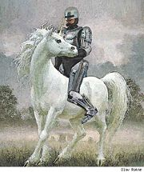
Рыцарь в сверкающих доспехах.
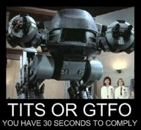
Сиськи или нахуй!
30 секунд на размышление!
- Робокоп, робокоп и ещё раз робокоп.
Киборг. Мозг и лицо человека, остальное — железки. Снаружи защищен хромированым экзоскелетом из титано-вольфрамового сплава. Броня Робокопа уникальна. После легкой перестрелки Робо с более 9000 наркоторговцев броня слегка закоптится и покроется парой вмятин с мячик для пиг-понга. Так же робокопа достаточно сложно расчленить отбойным молотком. Экзоскелет прочен, огнеупорен и надежно защищает лампово-транзисторные микросхемы. Гениальные инженеры OCP не предусмотрели только защиту от штыковой атаки, в результате Робокоп весьма уязвим и легкопротыкаем различными видами ломов и катан, чем с радостью пользуются все наркоторговцы и японские киборги. Дизайн брони - броня имперского штурмовика вырезаная из уличных мусорных контейнеров. Имперский шлем по всей видимости вырезать не получилось, обошлись без излишеств. Не смотря на неотделяемость мозга от основной конструкции, включается он только когда ситуацию нельзя разрулить тупо силовым превосходством.
Основное оружие — пистолет Auto-9, однако Робокоп успешно использует и другое подножное оружие. В третьей части ему сделали оружие-насадку вместо правой руки, включающую пулемёт, огнемёт и гранатомёт. Питается детской нямкой - «вакуумным» пИриком.
- Кейн (2 часть, в виде киборга). Не путать с Кейном. На вооружении миниган, двуствольная пушка (на глаз калибром 27-35 мм) и газовый или плазменный резак для рисования букав на лбу Робокопа. Алсо, робот-наркоман, чем неиллюзорно доставляет.
- Робоцып ака ED-209. Две ноги, два пулемёта, рокетлаунчер. Мозга нет. Ввиду наличия в ПО индусского кода перепрограммировать его может даже ребенок. Выпиливает и своих, и чужих без разбору, после того как посчитает до 10. Алсо, из-за технических особенностей, не умеет спускаться по лестнице, в следствие чего при падении орёт аки резаная свинья. Я гарантирую это! Тоже отметился коронной фразой:
— Отведайте свинца, ослы! (Eat lead, suckers!, переводите правильно сами).
- Алсо Protoss dragoon самизнаетеоткуда, будучи достаточно закликан мышью, произносит принадлежащую ED-209 фразу «Drop your weapon. You have 15 seconds to comply.», отсчитывает секунды и какбе стреляет в никуда.
- Напарница. Тётка, не имеющая личной жизни и на 100 % отдающаяся работе полиции. В третьей части была выпилена, отчего Робокоп с криком «NOOOOOOOOOOOOOO!!!» обратился
на тёмную сторону на сторону простых людей.
- Умная баба. Конструктор и техподдержка Робокопа. Тоже не имеет личной жизни.
- Киборг-ниндзя с нанокатаной, режущей все подряд и сигаретой. Да-да, киборг умеет курить. Сие безобразие можно увидеть в сцене, когда глава ускоглазой корпорации
Конейпиську Канимицу представляет своё детище главе OCP.
- Красавчик Боб aka Падфейс Морган он же PadFace Morgan (поправьте имя, если не так) — тот самый плохиш из первой части, которого искупали в токсичных отходах. Стал архизлодеем в сериале. Регулярно пытается сделать Мерфи плохо (то огнемётом обожжет, то заминирует…), но всегда лажает. (сериал)
- Виртуальная девица, бывшая секретарша, которой злостно вырезали мозг (привет Кейну) и задействовали оный как ЦП кибер-сети города — Метронет. Помогает робокопу и безуспешно его клеит. (сериал)
Напарник Мерфи. Ниггер. Превращен собственной женой в такого же робокопа, но в улучшенной лилово-черной броне и двумя пистолями вместо одного. Искользован для убивства невинных горожан с целью дискредитировать православного Робокопа-1. В конце становится хорошим, выключает Мерфи и гибнет от электромагнитного импульса. Мини-сериал нахуй.- Остальные в основном для антуража.
Коронные фразы
- Друзья зовут меня Мерфи, а для тебя я — Робокоп! (My friends call me Murphy. You call me — Robocop!)
- Живой или мёртвый, ты пойдёшь со мной. (Dead or alive, you are coming with me)
- Служить обществу. Защищать невиновных. Соблюдать закон.
Убивать всех человеков. (Serve the public trust. Protect the innocent. Uphold the law.)
- Благодарю за сотрудничество. (Thank you for your cooperation)
- Я должен идти. Где-то совершается преступление. (Excuse me, I have to go. Somewhere, there is a crime happening., универсальная отмазка)
- Они тебя починят, они все починят. (They'll fix you, they'll fix everything., раненой напарнице, лежа под грудой металлолома в конце первой части)
- Ты уволен! (You are fired!) — фраза не самого Робокопа (он только отвечает на нее «Спасибо!» и тут же стреляет в поциента, потерявшего защиту четвертой директивы), но широко известна в тесной связи с контекстом.
- Третья часть, выпил отделения чистильщиков в полицейском участке:
Чистильщик 1: «Огоньку не найдется?»
Чистильщик 2: «Конечно.»
Робокоп (стреляя из огнемёта): «Позволь мне, подлец!»
Альтернативная версия:
Чистильщик: «Есть огонёк?»
Робокоп (стреляя из огнемёта): «А как же!»
1st rehab: «Hey, you got a light?»
2nd rehab: «Sure man».
Robocop: «Allow me, scum!»
- «На Робокопов нет гарантии» (You see, Robocop’s off warranty), говорит эффективный манагер из OCP на требование поставить Робокопа на ноги во второй части, когда Робо распилили на цветмет.
- Конец третьей части.
МакДаггет: «Чем могу помочь, офицер?»
Робокоп: «Сопротивлением при аресте.»
McDaggett: «How may i help you, officer?»
Robocop: «By resisting arrest.»
Энн спрашивает у напарника, что он будет делать по поводу этого всего, на это он ей отвечает: «Терпение, Льюис, мы всего лишь люди.» (Patience, Lewis, we're only human.)
Главный вопрос Жизни, Вселенной и всего такого
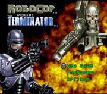
кто же всё-таки круче???
...так кто же все-таки круче — Робокоп или Терминатор?
По мотивам этой загадки было снято несколько нарезок, желающим курить ТыТюбик самостоятельно.
Также, имеется консольная игра (на ПК поиграть можно тоже, пруфлинк ищите сами) Robocop vs Terminator
Игры
По мотивам фильма было выпущено неебическое количество консольных игр:
Robocop (NES, 1987) — годная игруха по мотивам первого фильма, играем мы естественно Робокопом. На первых порах злодеи пытаются в рукопашную отвесить вам люлей или переехать мотоциклом, ещё какие-то шавки пытаются вас выпилить, однако некоторые плохишы вооружены автоматами, огнеметами и Cobra Gun (отнимает около четверти здоровья). В конце каждого уровня вас ждет босс (дважды встретимся с Робоцыпом, куда же без него?). Цель: выпилить всех врагов. На вооружении у робокопа его фирменный ствол (стреляет одиночными пулями), автомат (что-то вроде Узи, стреляет с огромной скоростью на небольшое расстояние, эффективно против боссов), Cobra Gun (выпиливает почти любого противника с одного выстрела, встречается редко). Игра довольно сложная (пройти её ни разу не проиграв почти нереально), чем может вызвать не хилый батхерт у нуба:
- Робокоп очень медленный, в то время враги носятся, как угорелые.
- Робокоп периодически убирает своё оружие (зачем???) и приходится обходиться кулаками, что очень не эффективно против собак и мотоциклистов.
- От выстрелов противника почти невозможно увернуться (особенно от Cobra Gun и всяких пушек). Однако нажав Select, можно увернуться от любой атаки.
- Всякие пушки, появляющиеся из пола и потолка отнимают до хуя здоровья.
- Нужно торопиться, потому что игра на время (индикатор энергии внизу экрана), особенно это актуально на последнем уровне.
Robocop (ZX Spectrum, 1989) - не смотря на всю унылость спектрумовской графики и отсутствие саундтрека чуть менее, чем полностью (пердеж бипера, имитирующий выстрелы и взрывы не в счет) игра доставляла. Анонимус утверждает, что при прохождении оной в порывах лютой, бешеной ненависти им было сломано целых три kempston-джойстика, что для олдфагов-спектрумистов как бы символизирует.
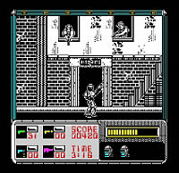
Робокоп на спектруме такой Робокоп
Robocop 2 (NES, 1991) — винрарная игра по мотивам второго фильма. Теперь наш робопарень прибавил в скорости, научился прыгать и бегать, скорость стрельбы также увеличилась. Теперь главной целью является уничтожение вещества под названием Nuke, если на уровне останется чуть менее, чем половина веществ (точнее 48 % и более), то вас отправят на стрельбище поправить прицел: нужно в отведенное время уничтожить n-ое количество манекенов-плохишей, при этом есть хорошие манекены, попав в которые задача усложняется, ещё с небес сыпятся бонусы (дополнительное время и патроны). Если справляетесь — переходите на следующий уровень, если нет (кончилось время или патроны), то нужно заново проходить предыдущий уровень, что заставляет большинство игроков срать кирпичами. Также на каждом уровне есть злодеи, которых нужно арестовать, так что стрелять без разбору не рекомендуется. Игра невероятно сложная: на уровнях в лабораториях и на заводах противники и разные препятствия (какие-то крутилочки, прессы, электричество, какие-то пузырики, маленькие смерчи) выпиливают одним прикосновением. Это усугубляется еще и тем, что Робо подвержен инерции, и если прыгать или разогнаться, избежать столкновения или падения в яму бывает довольно затруднительно. А уж если еще и полы скользские, или движущиеся… После разборки с Кейном, жизнь Робо становится ещё сложнее: против него выступают какие-то роботы на гусеницах и что-то вроде маленьких Робоцыпов (потомство?), пушки, стреляющие какой-то хуитой, внезапно появляющиеся из-под земли капканы, плюс ко всему в любой момент может прилететь ракета-присоска, которая хватает Робо за жопу, тащит до конца уровня и благополучно выпиливает. Sad but true. Весьма доставляет финальная битва с Кейном-роботом. В основном приходится полагаться на старый добрый фирменный пистолет, однако на некоторых уровнях встречаются другие оружия (значки W):
- уменьшает скорость стрельбы, но выпиливает любого противника с одного выстрела
- 3-way shot двух видов: 1. вверх, вниз, вперед. 2. вперед, и два вперед по-диагонали.
Robocop 3(NES, 1992) — винрарная игра по мотивам третьего фильма. Самая лёгкая и самая короткая часть (4 уровня, можно пройти за 5 минут). На первом уровне нужно разобраться со сплатерпанками, хоть их и до хуя, но это будет просто. Дальше придется иметь дело с отрядами «Чистильщиков» и двумя ниндзями Канимицу. На этом уровне главное не вляпаться в «жидкость» (выпиливает с огромной скоростью). Далее можно будет полетать (реактивный двигатель, епт), однако, продвигаясь по уровню, нужно уворачиваться от ракет, которые запускает босс — здоровенный танк. Выпилив танк и огромную кучу панков и чистильщиков, встретим старого друга Робоцыпа и наконец ещё парочку ниндзь. После каждого уровня можно подлатать раны, тело разделено на 4 блока: ноги, руки, туловище, голова. Если блок сильно поврежден, то Робокоп периодически будет тормозить:
- руки — временно не сможет стрелять
- голова — будет идти не туда, куда надо (в противоположную сторону, например: жмешь вперед, а он идет назад)
- ноги — временно не сможет идти, приседать, прыгать
- туловище — временно застынет (вообще всё отказывает)
Имеется 6 видов оружия: фирменный ствол, тот же ствол только мощнее и скорострельнее, 3-way ствол, ракеты обыкновенные, ракеты самонаводящиеся, большой БУМ (встречается один раз, разумно применить против танка). Невольно доставляют подсказки в виде директив: в русской версии появляется надпись «Арестуй эту мразь»… Также игра выгодно отличается качественной музыкой, которую написал сам Jeroen Tel.
Глюк: в финальной сцене ниндзи должны отрубить друг другу головы, но бывает, что один ниндзя встает в позу, а второй прыгает себе, а время идет, и когда оно кончится, игрок проиграет, несмотря на то, что все сделал правильно.
Robocop 3 (SEGA, 1993) — имеет мало общего с несовской игрой, поклонники дендевских Робокопов будут срать кирпичами на это унылое говно. В начале отстреливаем каких-то качков, плюс робота с пилой и летающие тарелки, потом внезапно подкатывает отряд чистильщиков, справиться с ними поможет Робоцып… Дважды предстоит полетать, сбивая те же тарелки и другую нечисть, будут и ниндзи, однако они уже не те. В игре есть 5 оружий: обычный пистолет, 3-way пистолет, лазер (самое ходовое оружие), огнемет (тоже годное), ракеты (встречается один раз). В целом игра уныла чуть более, чем полностью. Доставляет то, что в игре чуть ли не самым опасным противником становятся обыкновенные крысы.
Robocop vs The Terminator — мегавин для Сеги от особо упоротых товарищей как попытка ответить на главный вопрос Жизни, Вселенной и всего такого — кто же круче, Робо или Арни? Плот игры представлял собой шизофреническую помесь из двух фильмов, где терминаторы ходили по офисам OCP, а робоцып управлялся скайнетом. Игра запомнилась винрарной музыкой и неплохим артом, алсо после убийства робоцыпа оставался суперский пулемёт, который можно было подобрать, взять и уебать.
Кто сказал, что только консоли? PC также отметилась:
Robocop 3 (PC, 1992) — внезапно вин (для своего времени). Графика — полное 3D, хотя и нетекстурированное. 1 уровень — 3D-шутер. Нужно извести злыдней-террористов в переулке и спасти напарницу. 2 уровень — автосимулятор (догнать и затаранить удирающего плохиша, город доставляет). 3 уровень — файт с киборгом Каменицу (не доставляет). 4 уровень — авиасимулятор (полёт на реактивном ранце, нужно извести винтокрылы, танки, и, внезапно, — робоцыпов, работающих в режиме зенитки; город снова доставляет). 5 уровень — 3D-шутер в здании OCP и файт с ещё двумя киборгами Каменицу.
Robocop (PC, 2003) — FPS. Унылейшее говно. Nuff Said.
Галерея
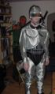
Косплей Робокопа
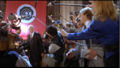
Hail OCP!
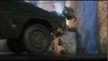
ВНЕЗАПНО, танчик.
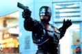
STOP RIGHT THERE, CRIMINAL SCUM!
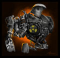
Кейн глазами художник-куна
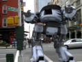
Робоцып на службе ucsocp
Жалкая кетайская подделка
Чтобы не стать героем имея такую внешность Мерфи регулярно принимает вещества